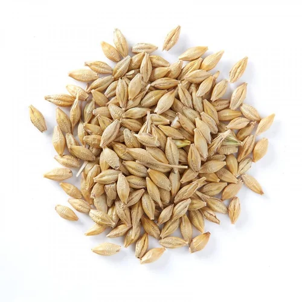
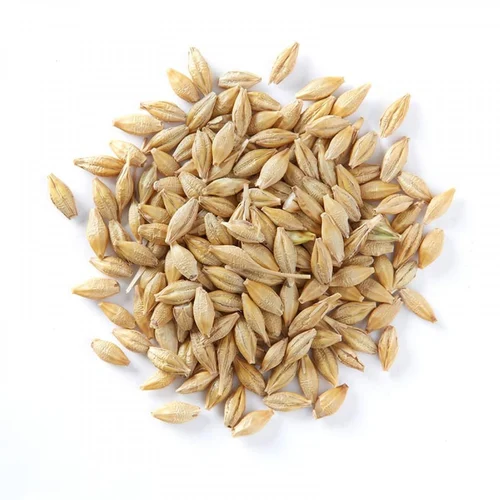

HimachalPradesh-Types
1. BARLEY / 1. जौ
 

Barley cultivation in Himachal Pradesh typically occurs in the Rabi (winter) season. The state
contributes to India's barley production, but its market share is relatively modest compared to major
barley-producing regions. Barley thrives in well-drained loamy soils with a slightly acidic to neutral
pH. Cultivation requires moderate resources, and barley usually matures in about 90-120 days. Adequate
irrigation, fertilization, and pest management are essential. While demand exists locally, the primary
markets for Himachal Pradesh barley are often within the state and neighboring regions like Punjab and
Haryana, where barley is utilized in various food and beverage products.
हिमाचल प्रदेश में जौ की खेती आमतौर पर रबी (सर्दियों) के मौसम में होती है। राज्य भारत के जौ उत्पादन में
योगदान देता है, लेकिन प्रमुख जौ उत्पादक क्षेत्रों की तुलना में इसकी बाजार हिस्सेदारी अपेक्षाकृत मामूली
है। जौ थोड़ी अम्लीय से लेकर तटस्थ पीएच वाली अच्छी जल निकास वाली दोमट मिट्टी में पनपता है। खेती के लिए
मध्यम संसाधनों की आवश्यकता होती है, और जौ आमतौर पर लगभग 90-120 दिनों में पक जाता है। पर्याप्त सिंचाई,
उर्वरक और कीट प्रबंधन आवश्यक है। जबकि मांग स्थानीय स्तर पर मौजूद है, हिमाचल प्रदेश जौ के लिए प्राथमिक
बाजार अक्सर राज्य और पंजाब और हरियाणा जैसे पड़ोसी क्षेत्रों में होते हैं, जहां जौ का उपयोग विभिन्न खाद्य
और पेय उत्पादों में किया जाता है।
2. RICE / 2. चावल


Rice cultivation in Himachal Pradesh predominantly takes place during the Kharif (summer) season, with
sowing typically starting around June and harvesting occurring in September. While rice cultivation is
practiced in the state, Himachal Pradesh's market share is relatively smaller compared to major
rice-producing regions. Rice plants prefer well-drained, fertile soils. Cultivation demands significant
water resources and skilled labor. The time and resources required vary based on the rice variety and
farming practices. While there is local demand, the state's rice production often caters to domestic
consumption within Himachal Pradesh and nearby regions like Punjab and Haryana.
हिमाचल प्रदेश में चावल की खेती मुख्य रूप से ख़रीफ़ (गर्मी) सीज़न के दौरान होती है, बुआई आमतौर पर जून के
आसपास शुरू होती है और कटाई सितंबर में होती है। जबकि राज्य में चावल की खेती की जाती है, प्रमुख चावल
उत्पादक क्षेत्रों की तुलना में हिमाचल प्रदेश की बाजार हिस्सेदारी अपेक्षाकृत कम है। चावल के पौधे अच्छी जल
निकासी वाली, उपजाऊ मिट्टी पसंद करते हैं। खेती के लिए महत्वपूर्ण जल संसाधनों और कुशल श्रम की आवश्यकता
होती है। चावल की किस्म और कृषि पद्धतियों के आधार पर आवश्यक समय और संसाधन अलग-अलग होते हैं। हालांकि
स्थानीय मांग है, राज्य का चावल उत्पादन अक्सर हिमाचल प्रदेश और पंजाब और हरियाणा जैसे आसपास के क्षेत्रों
में घरेलू खपत को पूरा करता है।
3. WHEAT / 3. गेहूं


Wheat cultivation in Himachal Pradesh primarily takes place during the Rabi (winter) season, with sowing
typically occurring from late October to December and harvesting in April or May. While Himachal Pradesh
contributes to India's wheat production, its market share is relatively smaller compared to major
wheat-producing states. Wheat plants thrive in well-drained loamy soils with a slightly acidic to
neutral pH. Cultivation requires moderate resources, including fertilizers and irrigation. The time and
resources needed vary based on specific practices and environmental conditions. Himachal Pradesh's wheat
production often caters to local consumption within the state and neighboring regions like Punjab and
Haryana.
हिमाचल प्रदेश में गेहूं की खेती मुख्य रूप से रबी (सर्दियों) के मौसम में होती है, बुआई आमतौर पर अक्टूबर
के अंत से दिसंबर तक होती है और कटाई अप्रैल या मई में होती है। जबकि हिमाचल प्रदेश भारत के गेहूं उत्पादन
में योगदान देता है, प्रमुख गेहूं उत्पादक राज्यों की तुलना में इसकी बाजार हिस्सेदारी अपेक्षाकृत कम है।
गेहूं के पौधे थोड़ी अम्लीय से लेकर तटस्थ पीएच वाली अच्छी जल निकास वाली दोमट मिट्टी में पनपते हैं। खेती
के लिए उर्वरक और सिंचाई सहित मध्यम संसाधनों की आवश्यकता होती है। आवश्यक समय और संसाधन विशिष्ट प्रथाओं और
पर्यावरणीय स्थितियों के आधार पर भिन्न-भिन्न होते हैं। हिमाचल प्रदेश का गेहूं उत्पादन अक्सर राज्य के भीतर
और पंजाब और हरियाणा जैसे पड़ोसी क्षेत्रों में स्थानीय खपत को पूरा करता है।
4. LENTILS / 4. मसूर


Lentil cultivation in Himachal Pradesh primarily takes place as a Rabi (winter) crop, typically sown
from October to December. The state contributes to lentil production, but its market share is relatively
smaller compared to major lentil-producing regions. Lentil plants prefer well-drained, sandy-loam soils
with a slightly acidic to neutral pH. Cultivation requires moderate resources, and lentils usually
mature in about 90-120 days. Adequate irrigation, especially during critical growth stages, is
essential. While there is local demand, Himachal Pradesh's lentil production often caters to domestic
consumption within the state and neighboring regions like Punjab and Haryana.
हिमाचल प्रदेश में मसूर की खेती मुख्य रूप से रबी (सर्दियों) की फसल के रूप में होती है, जिसे आमतौर पर
अक्टूबर से दिसंबर तक बोया जाता है। राज्य दाल उत्पादन में योगदान देता है, लेकिन प्रमुख दाल उत्पादक
क्षेत्रों की तुलना में इसकी बाजार हिस्सेदारी अपेक्षाकृत कम है। मसूर के पौधे थोड़ी अम्लीय से तटस्थ पीएच
वाली अच्छी जल निकासी वाली, रेतीली-दोमट मिट्टी पसंद करते हैं। खेती के लिए मध्यम संसाधनों की आवश्यकता होती
है, और दाल आमतौर पर लगभग 90-120 दिनों में पक जाती है। पर्याप्त सिंचाई, विशेष रूप से महत्वपूर्ण विकास
चरणों के दौरान, आवश्यक है। जबकि स्थानीय मांग है, हिमाचल प्रदेश का मसूर उत्पादन अक्सर राज्य और पंजाब और
हरियाणा जैसे पड़ोसी क्षेत्रों के भीतर घरेलू खपत को पूरा करता है।
5. CHICPEAS / 5. चने

Chickpea cultivation in Himachal Pradesh is primarily done during the Rabi (winter) season, with sowing
usually taking place from October to December. The state contributes to chickpea production, but its
market share is relatively smaller compared to major chickpea-producing regions. Chickpea plants prefer
well-drained soils with a slightly acidic to neutral pH. Cultivation demands moderate resources,
including fertilizers and irrigation. The crop typically matures in about 90-110 days. While there is
local demand, Himachal Pradesh's chickpea production mainly caters to domestic consumption within the
state and neighboring regions like Punjab and Haryana.
हिमाचल प्रदेश में चने की खेती मुख्य रूप से रबी (सर्दियों) के मौसम में की जाती है, जिसकी बुआई आमतौर पर
अक्टूबर से दिसंबर तक होती है। राज्य चना उत्पादन में योगदान देता है, लेकिन प्रमुख चना उत्पादक क्षेत्रों
की तुलना में इसकी बाजार हिस्सेदारी अपेक्षाकृत कम है। चने के पौधे थोड़ी अम्लीय से तटस्थ पीएच वाली अच्छी
जल निकासी वाली मिट्टी पसंद करते हैं। खेती के लिए उर्वरक और सिंचाई सहित मध्यम संसाधनों की आवश्यकता होती
है। फसल आमतौर पर लगभग 90-110 दिनों में पक जाती है। हालांकि स्थानीय मांग है, हिमाचल प्रदेश का चना उत्पादन
मुख्य रूप से राज्य और पंजाब और हरियाणा जैसे पड़ोसी क्षेत्रों में घरेलू खपत को पूरा करता है।
6. TEA / 6. चाय


Tea cultivation in Himachal Pradesh occurs primarily during the spring and summer seasons. While
Himachal Pradesh has a burgeoning tea industry, its market share is relatively smaller compared to
traditional tea-producing states like Assam and Darjeeling. Tea plants thrive in well-drained, acidic
soils with a pH range of 4.5-5.5. The cultivation process demands careful attention, taking about 3-4
years for the plants to mature. Adequate resources, including irrigation and skilled labor, are
essential. Although Himachal Pradesh tea is gaining recognition for its quality, demand is primarily
regional, with a growing market in nearby states like Punjab and Haryana.
हिमाचल प्रदेश में चाय की खेती मुख्य रूप से वसंत और गर्मी के मौसम में होती है। जबकि हिमाचल प्रदेश में चाय
उद्योग तेजी से बढ़ रहा है, लेकिन इसकी बाजार हिस्सेदारी असम और दार्जिलिंग जैसे पारंपरिक चाय उत्पादक
राज्यों की तुलना में अपेक्षाकृत कम है। चाय के पौधे 4.5-5.5 पीएच रेंज वाली अच्छी जल निकासी वाली, अम्लीय
मिट्टी में पनपते हैं। खेती की प्रक्रिया पर सावधानीपूर्वक ध्यान देने की आवश्यकता होती है, पौधों को
परिपक्व होने में लगभग 3-4 साल लगते हैं। सिंचाई और कुशल श्रम सहित पर्याप्त संसाधन आवश्यक हैं। यद्यपि
हिमाचल प्रदेश की चाय अपनी गुणवत्ता के लिए पहचान हासिल कर रही है, लेकिन मांग मुख्य रूप से क्षेत्रीय है,
जिसका बाजार पंजाब और हरियाणा जैसे नजदीकी राज्यों में बढ़ रहा है।
7. MAIZE / 7. मक्का

Maize cultivation in Himachal Pradesh typically occurs as a Kharif (summer) crop, with sowing usually
starting from June to July. While the state contributes to maize production, its market share is
relatively smaller compared to major maize-producing regions. Maize plants thrive in well-drained soils
with a slightly acidic to neutral pH. Cultivation requires moderate resources, including fertilizers and
water management. The crop usually matures in about 100-120 days. While there is local demand, Himachal
Pradesh's maize production often caters to domestic consumption within the state and neighboring regions
like Punjab and Haryana.
हिमाचल प्रदेश में मक्के की खेती आम तौर पर खरीफ (ग्रीष्मकालीन) फसल के रूप में होती है, जिसकी बुआई आमतौर
पर जून से जुलाई तक शुरू होती है। जबकि राज्य मक्का उत्पादन में योगदान देता है, प्रमुख मक्का उत्पादक
क्षेत्रों की तुलना में इसकी बाजार हिस्सेदारी अपेक्षाकृत कम है। मक्के के पौधे थोड़ी अम्लीय से लेकर तटस्थ
पीएच वाली अच्छी जल निकासी वाली मिट्टी में पनपते हैं। खेती के लिए उर्वरक और जल प्रबंधन सहित मध्यम
संसाधनों की आवश्यकता होती है। फसल आमतौर पर लगभग 100-120 दिनों में पक जाती है। जबकि स्थानीय मांग है,
हिमाचल प्रदेश का मक्का उत्पादन अक्सर राज्य और पंजाब और हरियाणा जैसे पड़ोसी क्षेत्रों के भीतर घरेलू खपत
को पूरा करता है।